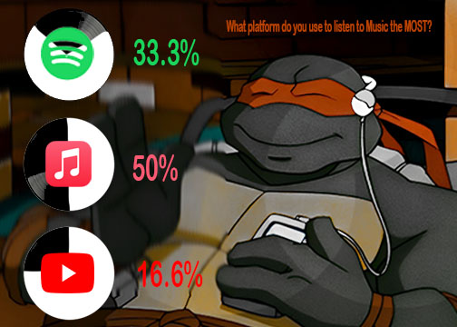

This data shows where people listen to music the most! I used the picture of the ninja turtle because I really love Ninja Turtles and I thought this would be a nice personal touch to my data visualization! I asked 12 people what music app they used the most!
